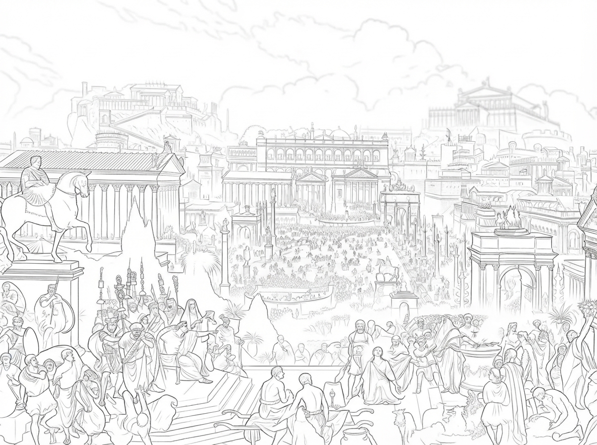
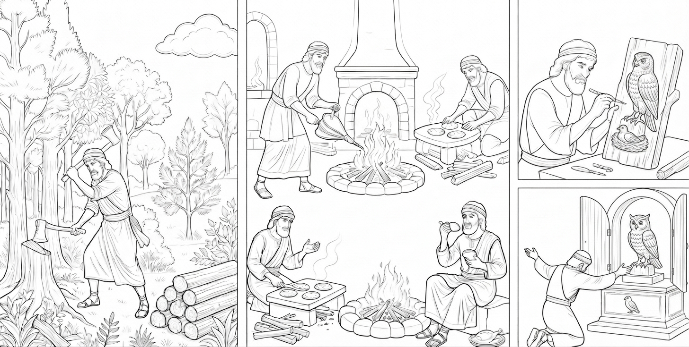

Chapter 06 of 12
Strange Humans

Of all the creatures I had seen in the sky, upon the earth, and in the sea, none seemed more intelligent than human beings.
They were smaller than the trees, yet they could cut down entire forests. They used wood to build houses, and even built towers that seemed to reach toward the sky. There were far fewer of them than there were sheep or goats, yet they could raise flocks numbering in the thousands. They knew when to sow and when to harvest. They knew when grapes were ripe and how to turn them into wine. Their boys went to school to learn. Their girls braided their hair into beautiful plaits. They could write. They could count. They could build. They could sail farther than we could fly.
For a long time, I assumed that a people so intelligent must surely know their Master.
But there was one thing about human beings that I could never understand. They would kneel before things that were not their Master. And somehow, they always seemed to look to those things to tell them who they were.
One day, I saw a woodcutter in the forest. He worked hard all day, cutting and splitting trees. By the time darkness approached, he was exhausted and hungry. So he cut some firewood and built a fire. With the wood, he cooked a pot of soup and roasted a chicken.
That evening, he ate until he was full and seemed content. The fire gradually burned low. A few pieces of wood remained. He picked up one of them and began to carve.

I watched from a branch above him. His hands were skillful. Before long, the shape of a bird began to appear in the piece of wood. I tilted my head and watched for a long time. It was a bird.
The man had carved a bird. Then he lifted it high into the air and knelt down before it. He called the wooden bird his master.
I opened my eyes wide. I could not understand it. A moment before, he had used wood from the very same tree to build his fire, cook his soup, and roast his chicken. Now he had carved the remaining wood into a bird— and was bowing down before it.
I thought that if the wooden bird had truly been alive, it would probably have been even more surprised than I was.
But human beings did not seem to find anything strange about it. They could carve birds. They could carve animals. They could carve human beings. They could even shape metal into images of gods. They lifted up the things they had made with their own hands, and then knelt before them.
I have heard that some people even offer their sons and daughters to these idols, burning them as sacrifices before things they themselves have made. Whenever I think about this, I understand a little more why my Master was so greatly angered by it. They were creatures made by the hand of their Master.
Yet they had turned away from Him and worshiped the things they themselves had made. It is something I still cannot understand.
Every day, we fly through the sky. When morning comes, we know where the sun will rise. When the seasons change, migrating birds know when it is time to leave. Pigeons know their way home. We know when to spread our wings and when to search for a place to rest.
The birds of the sky know the seasons. The fish of the sea know when the waters rise and when they recede. The animals of the earth know their paths. And yet human beings so often do not know their Master.
They can study the heavens, yet forget the One who stretched them out. They can sail upon the sea, yet forget the One who walks upon its waves. They can count the stars, yet fail to know the One who placed each of them in the heavens.
We do not understand everything our Master does. Sometimes we do not even know why He sends the wind from the east, why He causes rain to fall upon one forest and not another, or why He allows a little bird to lose its nest.
But there is one thing we know:
We were made by Him.
He is our Master.
We do not need to make a master for ourselves.
Human beings are different. They always seem to need something to take the place of their Master. Sometimes it is a piece of wood. Sometimes a statue of gold. Sometimes power. Sometimes wealth. And sometimes, it is even themselves.
Human beings really are strange. They are the wisest of all the creatures their Master has made, yet they are strangely prone to forgetting that they themselves were once fashioned by the hand of the Master— His own carefully made creation.